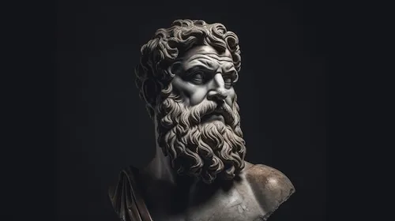

For those of us who live our lives in the real world, there is one branch of philosophy created just for us: Stoicism. It’s a philosophy designed to make us more resilient, happier, more virtuous and more wise–and as a result, better people, better parents and better professionals. Stoicism has been a common thread through some of history’s great leaders. It has been practiced by Kings, presidents, artists, writers and entrepreneurs. Marcus Aurelius. Frederick the Great, Montaigne, George Washington, Thomas Jefferson, Adam Smith, John Stuart Mill, Theodore Roosevelt, General James Mattis, —just to name a few—were all influenced by Stoic philosophy.
Welcome
to
lessons on stoicism

What Are The 4 Virtues of Stoicism? Courage;Temperance;Justice;Wisdom. They are the most essential values in Stoic philosophy. “If, at some point in your life,” Marcus Aurelius wrote, “you should come across anything better than justice, truth, self-control, courage—it must be an extraordinary thing indeed.” That was almost twenty centuries ago. We have discovered a lot of things since then—automobiles, the Internet, cures for diseases that were previously a death sentence—but have we found anything better? …than being brave …than moderation and sobriety …than doing what’s right …than truth and understanding? No, we have not. It’s unlikely we ever will. Everything we face in life is an opportunity to respond with these four traits.